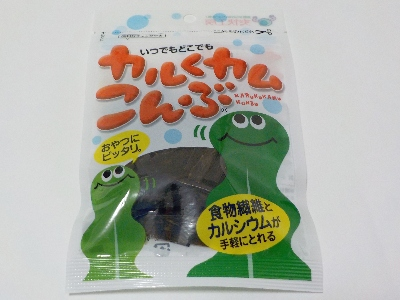

上田昆布のいつでもどこでもカルくカムこんぶ
2025/03/08

「昆布は食物繊維とカルシウムが手軽にとれる あやつにピッタリ」と書いてあります。それはいいなと思い食べることにしました。
でも昆布にはヨウ素が多くあり、過剰摂取すると甲状腺に影響を及ぼす可能性があるらしい。なので1日の摂取量は1gかた1.5gだそうです。
この昆布製品の内容量は8gです。普段の食事でも昆布を摂取するので、1袋1週間以上持たせた方がいいんだろうなと思いながら食べました。パッケージには開封後はなるべく早くお召し上がりくださいと書いてありますが、それは考えないことにしました。
食べ過ぎ注意って思ってると実際にちょっとずつしか食べなく、長持ちしました。なんか財布と体にやさいいいい食品です。